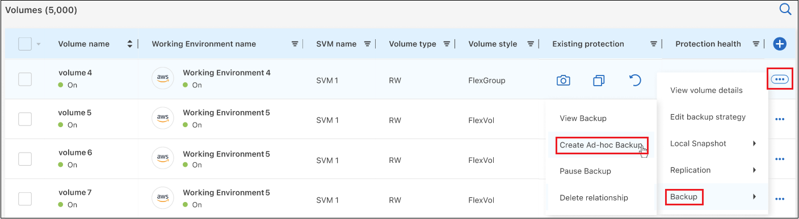
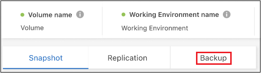
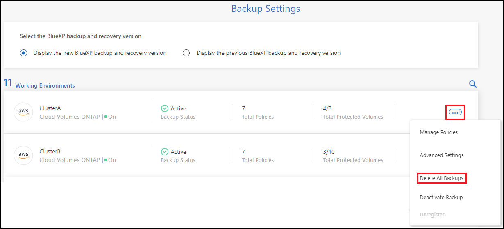

Notas de la versión
Notas de la versión
Gestione los backups para sus sistemas ONTAP
 Sugerir cambios
Sugerir cambios
Puede gestionar backups en sus sistemas Cloud Volumes ONTAP y ONTAP en las instalaciones si cambia la programación de backups, habilita o deshabilita backups de volúmenes, pausa los backups, elimina backups, etc. Esto incluye todos los tipos de backups, incluidas las copias Snapshot, los volúmenes replicados y los archivos de backup en el almacenamiento de objetos.

|
No gestione ni modifique los archivos de backup directamente en sus sistemas de almacenamiento ni desde su entorno de proveedor de cloud. Esto puede dañar los archivos y dar como resultado una configuración no compatible. |
Vea el estado de backup de los volúmenes en sus entornos de trabajo
Es posible ver una lista de todos los volúmenes de los que se están respaldando en la consola de backup de volúmenes. Esto incluye todos los tipos de backups, incluidas las copias Snapshot, los volúmenes replicados y los archivos de backup en el almacenamiento de objetos. También puede ver los volúmenes en aquellos entornos de trabajo de los que no se esté realizando un backup actualmente.
-
En el menú BlueXP, seleccione Protección > copia de seguridad y recuperación.
-
Haga clic en la pestaña Volúmenes para ver la lista de los volúmenes de los que se ha realizado una copia de seguridad de sus sistemas Cloud Volumes ONTAP y ONTAP locales.

-
Si está buscando volúmenes específicos en determinados entornos de trabajo, puede refinar la lista por entorno de trabajo y volumen. También puede usar el filtro de búsqueda u ordenar las columnas según el estilo de volumen (FlexVol o FlexGroup), tipo de volumen y más.
Para mostrar columnas adicionales (agregados, estilo de seguridad (Windows o UNIX), política de Snapshot, política de replicación y política de backup), seleccione
 .
. -
Revise el estado de las opciones de protección en la columna Protección existente. Los 3 iconos significan «copias Snapshot locales», «volúmenes replicados» y «backups en almacenamiento de objetos».

Cada icono es azul cuando ese tipo de copia de seguridad está activado, y es gris cuando el tipo de copia de seguridad está inactivo. Es posible pasar el cursor sobre cada icono para ver la política de backup que se está utilizando, así como otra información pertinente de cada tipo de backup.
Activar backup en volúmenes adicionales en un entorno de trabajo
Si activaste el backup solo en algunos de los volúmenes de un entorno de trabajo cuando habilitaste el backup y la recuperación de BlueXP por primera vez, puedes activar backups en volúmenes adicionales más adelante.
-
En la pestaña Volúmenes, identifique el volumen en el que desea activar las copias de seguridad, seleccione el menú Acciones
 Al final de la fila, y seleccione Activar copia de seguridad.
Al final de la fila, y seleccione Activar copia de seguridad.
-
En la página Definir estrategia de backup, seleccione la arquitectura de backup y, a continuación, defina las políticas y otros detalles para Local Snapshot copies, los volúmenes replicados y los archivos de backup. Consulte los detalles de las opciones de backup en los volúmenes iniciales que activó en este entorno de trabajo. A continuación, haga clic en Siguiente.
-
Revise la configuración de copia de seguridad de este volumen y luego haga clic en Activar copia de seguridad.
Si desea activar el backup en varios volúmenes al mismo tiempo con configuraciones de backup idénticas, consulte Editar la configuración de backup en varios volúmenes para obtener más detalles.
Cambie la configuración de backup asignada a los volúmenes existentes
Es posible cambiar las políticas de backup asignadas a los volúmenes existentes que tienen políticas asignadas. Puede cambiar las políticas de sus copias snapshot locales, volúmenes replicados y archivos de backup. Cualquier nueva política de Snapshot, replicación o backup que desee aplicar a los volúmenes debe existir ya.
Edite la configuración de backup en un único volumen
-
En la pestaña Volúmenes, identifique el volumen que desea realizar cambios en la política, seleccione el menú Acciones
Al final de la fila, y seleccione Editar estrategia de copia de seguridad.
-
En la página Editar estrategia de copia de seguridad, realice cambios en las políticas de copia de seguridad existentes para copias Snapshot locales, volúmenes replicados y archivos de copia de seguridad y haga clic en Siguiente.
Si habilitó DataLock y Ransomware Protection para backups en el cloud en la política de backup inicial al activar el backup y la recuperación de BlueXP para este clúster, solo verá otras políticas que se hayan configurado con DataLock. Y si no activaste DataLock y Ransomware Protection al activar el backup y la recuperación de BlueXP, solo verás otras políticas de backup en la nube que no tengan DataLock configurado.
-
Revise la configuración de copia de seguridad de este volumen y luego haga clic en Activar copia de seguridad.
Editar la configuración de backup en varios volúmenes
Si desea usar la misma configuración de backup en varios volúmenes, puede activar o editar la configuración de backup en varios volúmenes al mismo tiempo. Puede seleccionar volúmenes que no tengan configuración de backup, solo configuración de Snapshot, solo backup en configuración de cloud, etc., y realizar cambios masivos en todos esos volúmenes con configuraciones de backup diversas.
Al trabajar con varios volúmenes, todos los volúmenes deben tener las siguientes características comunes:
-
el mismo entorno de trabajo
-
Mismo estilo (volumen de FlexVol o FlexGroup)
-
Mismo tipo (volumen de lectura-escritura o protección de datos)
-
Desde la pestaña Volúmenes, filtra por el entorno de trabajo en el que residen los volúmenes.
-
Seleccione todos los volúmenes en los cuales desea gestionar la configuración de backup.
-
En función del tipo de acción de copia de seguridad que desee configurar, haga clic en el botón del menú Acciones masivas:

Acción de copia de seguridad… Haga clic en este botón… Gestionar la configuración de backup de Snapshot
Administrar instantáneas locales
Gestionar la configuración de copia de seguridad de replicación
Administrar Replicación
Gestione la configuración de backup en el cloud
* Administrar copia de seguridad *
Gestionar varios tipos de configuración de copia de seguridad. Esta opción también le permite cambiar la arquitectura de copia de seguridad.
* Administrar copia de seguridad y recuperación *
-
En la página de copia de seguridad que aparece, realice cambios en las políticas de copia de seguridad existentes para copias Snapshot locales, volúmenes replicados o archivos de copia de seguridad y haga clic en Guardar.
Si habilitó DataLock y Ransomware Protection para backups en el cloud en la política de backup inicial al activar el backup y la recuperación de BlueXP para este clúster, solo verá otras políticas que se hayan configurado con DataLock. Y si no activaste DataLock y Ransomware Protection al activar el backup y la recuperación de BlueXP, solo verás otras políticas de backup en la nube que no tengan DataLock configurado.
Crear un backup manual de volúmenes en cualquier momento
Es posible crear un backup bajo demanda en cualquier momento para capturar el estado actual del volumen. Esto puede ser útil si se han realizado cambios muy importantes en un volumen y no debe esperar a que se realice el siguiente backup programado para proteger los datos. Esta funcionalidad también puede usar para crear un backup para un volumen que no se está respaldando actualmente y que desee capturar su estado actual.
Es posible crear una copia Snapshot ad hoc o un backup en un objeto de un volumen. No se puede crear un volumen replicado ad hoc.
El nombre de backup incluye la Marca de hora para poder identificar el backup bajo demanda desde otros backups programados.
Si habilitó DataLock y Ransomware Protection al activar el backup y la recuperación de BlueXP para este clúster, el backup bajo demanda también se configurará con DataLock, y el período de retención será de 30 días. Los análisis de ransomware no se admiten para backups ad hoc. "Más información sobre la protección de DataLock y Ransomware".
Es preciso tener en cuenta que al crear un backup ad hoc, se crea una Snapshot en el volumen de origen. Dado que esta instantánea no forma parte de una programación normal de instantánea, no se girará. Puede eliminar manualmente esta snapshot del volumen de origen una vez completado el backup. De este modo, se podrán liberar los bloques relacionados con esta snapshot. El nombre de la snapshot comenzará con cbs-snapshot-adhoc-. "Consulte cómo eliminar una snapshot con la CLI de ONTAP".

|
No se admite el backup de volúmenes bajo demanda en los volúmenes de protección de datos. |
-
En la ficha Volumes, haga clic en
 Para el volumen y seleccione Copia de seguridad > Crear copia de seguridad ad-hoc.
Para el volumen y seleccione Copia de seguridad > Crear copia de seguridad ad-hoc.
La columna Backup Status de ese volumen muestra "in progress" hasta que se crea el backup.
Consulte la lista de backups de cada volumen
Es posible ver la lista de todos los archivos de backup que existen para cada volumen. Esta página muestra detalles sobre el volumen de origen, la ubicación de destino y los detalles de backup, como el último backup realizado, la política actual de backup, el tamaño del archivo de backup y mucho más.
-
En la ficha Volumes, haga clic en
Para el volumen de origen y seleccione Ver detalles del volumen.
De forma predeterminada, se muestran los detalles del volumen y la lista de copias Snapshot.

-
Seleccione Instantánea, Replicación o Copia de seguridad para ver la lista de todos los archivos de copia de seguridad para cada tipo de copia de seguridad.

Ejecuta un análisis de ransomware en un backup de volúmenes en el almacenamiento de objetos
El software de protección frente a ransomware NetApp analiza sus archivos de backup para buscar pruebas de un ataque de ransomware cuando se crea un backup en un archivo de objetos, y cuando se restauran datos de un archivo de backup. También puede ejecutar un análisis de protección frente al ransomware bajo demanda en cualquier momento para comprobar la facilidad de uso de un archivo de backup específico en el almacenamiento de objetos. Esto puede resultar útil si tuvo un problema de ransomware en un volumen en particular y desea verificar que los backups de ese volumen no se vean afectados.
Esta función solo está disponible si el backup del volumen se creó desde un sistema con ONTAP 9.11.1 o superior, y si habilitó DataLock and Ransomware Protection en la política de backup en objetos.
-
En la ficha Volumes, haga clic en
Para el volumen de origen y seleccione Ver detalles del volumen.Se muestran los detalles del volumen.
-
Seleccione Copia de seguridad para ver la lista de archivos de copia de seguridad en el almacenamiento de objetos.

-
Haga clic en
Para el archivo de copia de seguridad del volumen que desea escanear en busca de ransomware y haga clic en Escanear para Ransomware.
La columna Ransomware Protection mostrará que el análisis está en curso.
Gestione la relación de replicación con el volumen de origen
Después de configurar la replicación de datos entre dos sistemas, puede gestionar la relación de replicación de datos.
-
En la ficha Volumes, haga clic en
Para el volumen de origen y seleccione la opción Replicación. Puede ver todas las opciones disponibles. -
Seleccione la acción de replicación que desea realizar.

En la siguiente tabla se describen las acciones disponibles:
Acción Descripción Ver replicación
Muestra detalles sobre la relación de volumen: Información de transferencia, información de la última transferencia, detalles sobre el volumen e información sobre la política de protección asignada a la relación.
Actualizar la replicación
Inicia una transferencia incremental para actualizar el volumen de destino que se sincronizará con el volumen de origen.
Pausar la replicación
Ponga en pausa la transferencia incremental de copias Snapshot para actualizar el volumen de destino. Puede reanudar más tarde si desea reiniciar las actualizaciones incrementales.
Interrumpir la replicación
Interrumpe la relación entre los volúmenes de origen y destino, y activa el volumen de destino para el acceso a los datos, lo convierte en de lectura y escritura.
Esta opción suele utilizarse cuando el volumen de origen no puede servir datos debido a eventos como datos dañados, una eliminación accidental o un estado sin conexión.
"Aprenda a configurar un volumen de destino para acceder a los datos y reactivar un volumen de origen en la documentación de ONTAP"Aborte la replicación
Deshabilita los backups de este volumen en el sistema de destino y también deshabilita la capacidad de restaurar un volumen. No se eliminarán los backups existentes. Esto no elimina la relación de protección de datos entre los volúmenes de origen y de destino.
Resincronización inversa
Revierte los roles de los volúmenes de origen y destino. El contenido del volumen de origen original se sobrescribe con el contenido del volumen de destino. Esto es útil cuando se desea reactivar un volumen de origen que se desconectó.
No se conservan todos los datos escritos en el volumen de origen original entre la última replicación de datos y la hora en la que se deshabilitó el volumen de origen.Suprimir relación
Elimina la relación de protección de datos entre los volúmenes de origen y de destino, lo que significa que ya no se produce la replicación de datos entre los volúmenes. Esta acción no activa el volumen de destino para el acceso a datos, lo que significa que no lo convierte en lectura/escritura. Esta acción también elimina la relación entre iguales de clústeres y la relación entre iguales de máquinas virtuales de almacenamiento (SVM), si no hay otras relaciones de protección de datos entre los sistemas.
Después de seleccionar una acción, BlueXP actualiza la relación.
Edite una política de backup existente en el cloud
Puede cambiar los atributos de una política de backup que se aplique actualmente a los volúmenes en un entorno de trabajo. Los cambios que se aplican en la política de backup afectan a todos los volúmenes existentes que usan la política.
|
|
|
-
En la ficha Volumes, seleccione Configuración de copia de seguridad.

-
En la página Backup Settings, haga clic en
Para el entorno de trabajo en el que desea cambiar la configuración de la directiva y seleccione Administrar directivas.
-
En la página Manage Policies, haga clic en Edit para la política de copia de seguridad que desea cambiar en ese entorno de trabajo.

-
En la página Edit Policy, haga clic en
 Para ampliar la sección Labels & Retention para cambiar la programación y/o la retención de copia de seguridad, y haga clic en Guardar.
Para ampliar la sección Labels & Retention para cambiar la programación y/o la retención de copia de seguridad, y haga clic en Guardar.
Si el clúster ejecuta ONTAP 9.10.1 o más, también tendrá la opción de habilitar o deshabilitar la clasificación por niveles de los backups en el almacenamiento de archivado después de un cierto número de días.
"Obtenga más información sobre el uso del almacenamiento de archivado de Google". (Requiere ONTAP 9.12.1).
+
+ tenga en cuenta que todos los archivos de backup organizados en niveles para el almacenamiento de archivado se dejan en ese nivel si se detienen los backups por niveles en el archivado; no se vuelven a transferir automáticamente al nivel estándar. Solo los nuevos backups de volúmenes permanecerán en el nivel estándar.
Añada una nueva política de backup a cloud
Al habilitar el backup y la recuperación de BlueXP para un entorno de trabajo, se realiza un backup de todos los volúmenes que seleccionó inicialmente, utilizando la política de backup predeterminada que definió. Si desea asignar diferentes políticas de backup a ciertos volúmenes que tienen diferentes objetivos de punto de recuperación (RPO), puede crear políticas adicionales para ese clúster y asignar dichas políticas a otros volúmenes.
Si desea aplicar una nueva política de backup a ciertos volúmenes en un entorno de trabajo, primero debe añadir la política de backup al entorno de trabajo. Ahora puede aplique la política a los volúmenes en ese entorno de trabajo.
|
|
|
-
En la ficha Volumes, seleccione Configuración de copia de seguridad.
-
En la página Backup Settings, haga clic en
Para el entorno de trabajo en el que desea agregar la nueva directiva y seleccione Administrar directivas. -
En la página Manage Policies, haga clic en Add New Policy.

-
En la página Add New Policy, haga clic en
Para ampliar la sección Labels & Retention para definir la programación y la retención de copias de seguridad, y haga clic en Guardar.
Si el clúster ejecuta ONTAP 9.10.1 o más, también tendrá la opción de habilitar o deshabilitar la clasificación por niveles de los backups en el almacenamiento de archivado después de un cierto número de días.
"Obtenga más información sobre el uso del almacenamiento de archivado de Google". (Requiere ONTAP 9.12.1).
+
Eliminar backups
El backup y la recuperación de BlueXP te permite eliminar un único archivo de backup, eliminar todos los backups de un volumen o eliminar todas las copias de seguridad de todos los volúmenes en un entorno de trabajo. Es posible eliminar todos los backups si ya no se necesitan los backups o si se eliminó el volumen de origen y se desean quitar todos los backups.
Tenga en cuenta que no puede eliminar los archivos de copia de seguridad bloqueados mediante la protección DataLock y Ransomware. La opción "Eliminar" no estará disponible en la interfaz de usuario si ha seleccionado uno o más archivos de backup bloqueados.
|
|
Si piensa eliminar un entorno de trabajo o clúster que tiene copias de seguridad, debe eliminar las copias de seguridad antes de eliminando el sistema. El backup y la recuperación de datos de BlueXP no elimina automáticamente los backups cuando se elimina un sistema y no existe compatibilidad actual en la interfaz de usuario para eliminar los backups después de que el sistema se haya eliminado. Seguirá cobrándose los costes de almacenamiento de objetos por los backups restantes. |
Suprimir todos los archivos de copia de seguridad de un entorno de trabajo
Eliminar todos los backups del almacenamiento de objetos para un entorno de trabajo no deshabilita los futuros backups de volúmenes en este entorno de trabajo. Si desea detener la creación de backups de todos los volúmenes en un entorno de trabajo, puede desactivar los backups como se describe aquí.
Tenga en cuenta que esta acción no afecta a las copias Snapshot ni a los volúmenes replicados: Estos tipos de archivos de backup no se eliminan.
-
En la ficha Volumes, seleccione Configuración de copia de seguridad.
-
Haga clic en
Para el entorno de trabajo en el que desea eliminar todas las copias de seguridad y seleccione Eliminar todas las copias de seguridad.
-
En el cuadro de diálogo de confirmación, introduzca el nombre del entorno de trabajo y haga clic en Eliminar.
Elimine un solo archivo de backup para un volumen
Puede eliminar un solo archivo de copia de seguridad si ya no lo necesita. Esto incluye la eliminación de un backup único de una copia Snapshot de volumen o de un backup en almacenamiento de objetos.
No se pueden eliminar volúmenes replicados (volúmenes de protección de datos).
-
En la ficha Volumes, haga clic en
Para el volumen de origen y seleccione Ver detalles del volumen.Se muestran los detalles del volumen y puede seleccionar Instantánea, Replicación o Copia de seguridad para ver la lista de todos los archivos de copia de seguridad del volumen. De forma predeterminada, se muestran las copias Snapshot disponibles.
-
Seleccione Instantánea o Copia de seguridad para ver el tipo de archivos de copia de seguridad que desea eliminar.
-
Haga clic en
Para el archivo de copia de seguridad de volumen que desea eliminar y haga clic en Eliminar. La siguiente captura de pantalla es de un archivo de copia de seguridad en el almacenamiento de objetos.
-
En el cuadro de diálogo de confirmación, haga clic en Eliminar.
Elimine las relaciones de backup de volúmenes
Eliminar la relación de backup de un volumen ofrece un mecanismo de archivado si desea detener la creación de nuevos archivos de backup y eliminar el volumen de origen, pero conservar todos los archivos de backup existentes. Esto le permite restaurar el volumen desde el archivo de backup en el futuro, si es necesario, a la vez que se borra espacio del sistema de almacenamiento de origen.
No es necesario eliminar el volumen de origen. Es posible eliminar la relación de backup de un volumen y conservar el volumen de origen. En este caso, es posible "activar" el backup en el volumen más adelante. En este caso se sigue utilizando la copia de backup base original: No se crea ni exporta una nueva copia de backup de referencia al cloud. Tenga en cuenta que si se reactivará una relación de backup, se asignará el volumen la política de backup predeterminada.
Esta función solo está disponible si el sistema ejecuta ONTAP 9.12.1 o posterior.
No se puede eliminar el volumen de origen desde la interfaz de usuario de backup y recuperación de BlueXP. Sin embargo, puede abrir la página Detalles de volumen en el lienzo y. "elimine el volumen desde allí".
|
|
No se pueden eliminar archivos de backup de volúmenes individuales una vez que se ha eliminado la relación. Sin embargo, usted puede "elimine todos los backups del volumen" si desea quitar todos los archivos de backup. |
-
En la ficha Volumes, haga clic en
Para el volumen de origen y seleccione Copia de seguridad > Eliminar relación.
Desactiva el backup y la recuperación de BlueXP para un entorno de trabajo
Si se desactiva la copia de seguridad y recuperación de BlueXP para un entorno de trabajo, se desactivan las copias de seguridad de cada volumen del sistema y también se deshabilita la capacidad de restaurar un volumen. No se eliminarán los backups existentes. Esto no anula el registro del servicio de backup de este entorno de trabajo y básicamente le permite pausar toda la actividad de backup y restauración durante un periodo de tiempo.
Tenga en cuenta que su proveedor de cloud seguirá facturando los costes del almacenamiento de objetos por la capacidad que utilicen sus backups a menos que usted eliminar los backups.
-
En la ficha Volumes, seleccione Configuración de copia de seguridad.
-
En la página Backup Settings, haga clic en
Para el entorno de trabajo en el que desea desactivar las copias de seguridad y seleccione Desactivar copia de seguridad.
-
En el cuadro de diálogo de confirmación, haga clic en Desactivar.
|
|
Aparece un botón Activar copia de seguridad para ese entorno de trabajo mientras la copia de seguridad está desactivada. Haga clic en este botón para volver a habilitar la funcionalidad de backup para ese entorno de trabajo. |
Cancela el registro de backup y recuperación de BlueXP para un entorno de trabajo
Puedes cancelar el registro del backup y la recuperación de BlueXP en un entorno de trabajo si ya no quieres utilizar la funcionalidad de backup y quieres dejar de que se te cobren los backups de ese entorno de trabajo. Normalmente, esta función se utiliza cuando se planea eliminar un entorno de trabajo y se desea cancelar el servicio de backup.
También puede usar esta función si desea cambiar el almacén de objetos de destino donde se almacenan los backups del clúster. Después de cancelar el registro de backup y recuperación de BlueXP en el entorno de trabajo, puede habilitar el backup y la recuperación de BlueXP para ese clúster utilizando la nueva información del proveedor de cloud.
Antes de poder cancelar el registro de backup y recuperación de BlueXP, debe realizar los siguientes pasos, en este orden:
-
Desactiva el backup y la recuperación de BlueXP para el entorno de trabajo
-
Eliminar todos los backups de ese entorno de trabajo
La opción cancelar el registro no estará disponible hasta que se completen estas dos acciones.
-
En la ficha Volumes, seleccione Configuración de copia de seguridad.
-
En la página Backup Settings, haga clic en
Para el entorno de trabajo en el que desea cancelar el registro del servicio de copia de seguridad y seleccionar Unregister.
-
En el cuadro de diálogo de confirmación, haga clic en Unregister.